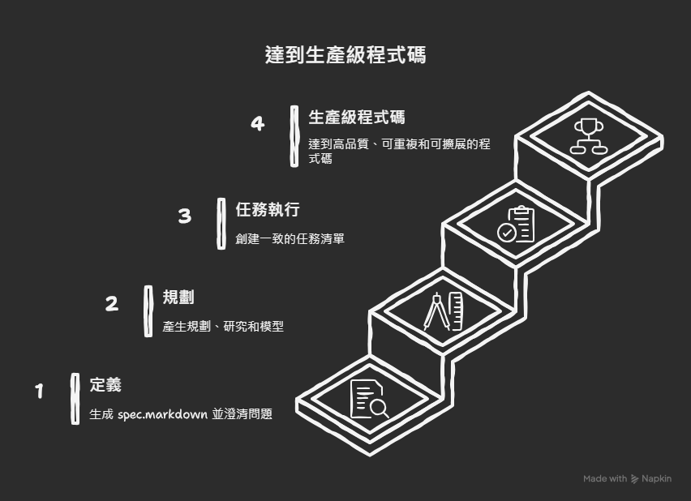

🎯 主題與結論
結論 (+)
範圍 (+)
📝 執行摘要
我的核心觀點是，結構化上下文 是 AI 輔助編碼成功的關鍵要素，而 GitHub 的一款免費工具，即 GitHub spec kit，透過其獨特的三階段流程——「定義」、「規劃」和「任務執行」——提供了一個可重複、無歧義且能生產高品質程式碼的開發系統。該系統旨在解決當前 AI 編碼中因上下文丟失、需求模糊導致的效率低下和項目失敗問題。藉由在開發初期投入時間進行詳細定義和規劃，開發者可以大幅節省後續的重構時間，並將模糊的點子轉化為具體、可建構的生產級軟體。這不僅提升了開發效率，更確保了最終產品的品質和可擴展性。
📖 背景
1. 時間 (+)
2. 領域 (+)
3. 受眾 (+)
4. 問題 (+)
5. 目標 (+)
6. 限制 (+)
📋 圖表
三階段開發流程（文字化流程圖）：使用者想法
以下是 GitHub spec kit 三階段開發流程的文字化流程圖，說明了從想法到生產級程式碼的演進路徑：